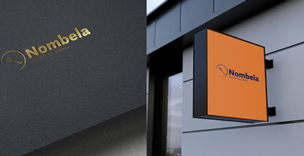

¿Quiénes somos?

El restaurante
Comida Casera desde 2018
Restaurante Nombela abrió sus puertas en 2018, siendo uno de los pocos
restaurantes en Madrid que cuenta con aparcamiento propio.
Somos un restaurante donde se celebran bodas, cumpleaños,
comidas empresariales y todo tipo de galas. Además, el trato y
la calidad de nuestros productos son dos pilares básicos de nuestro
éxito.
Nosotros
Queremos ofrecerte el marco perfecto para que estés a gusto, para
que puedas conversar mientras disfrutas con todos tus
sentidos la experiencia que vives. Quienes formamos el equipo
de este espacio intentamos en todo momento escuchar lo que quieres para
adaptarnos a lo que buscas
Dónde estamos
Además, al estar situado en la Av. de Concha Espina, junto al Santiago Bernabeu,
en Madrid, podrías visitarnos si vas a un evento, te atenderemos lo más rápido
posible para que llegues a tiempo, y al terminar, puedes volver a tomar algo y
conversar con tus acompañantes sobre lo que ha visto.
Redes sociales
Síguenos en nuestras redes sociales para saber más información acerca de nuestro restaurante.
Últimamente estamos subiendo contenido diario, mostrando platos nuevos,
probando en nuestra cocina ingredientes únicos en el mundo, etc.
Síguenos y verás todo esto y mucho más.

Contacto: 612 345 789 o nombelarestaurante@gmail.com


VictorDíaz©